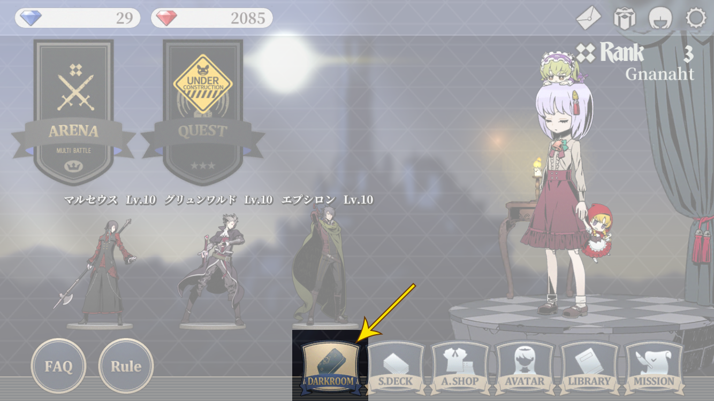
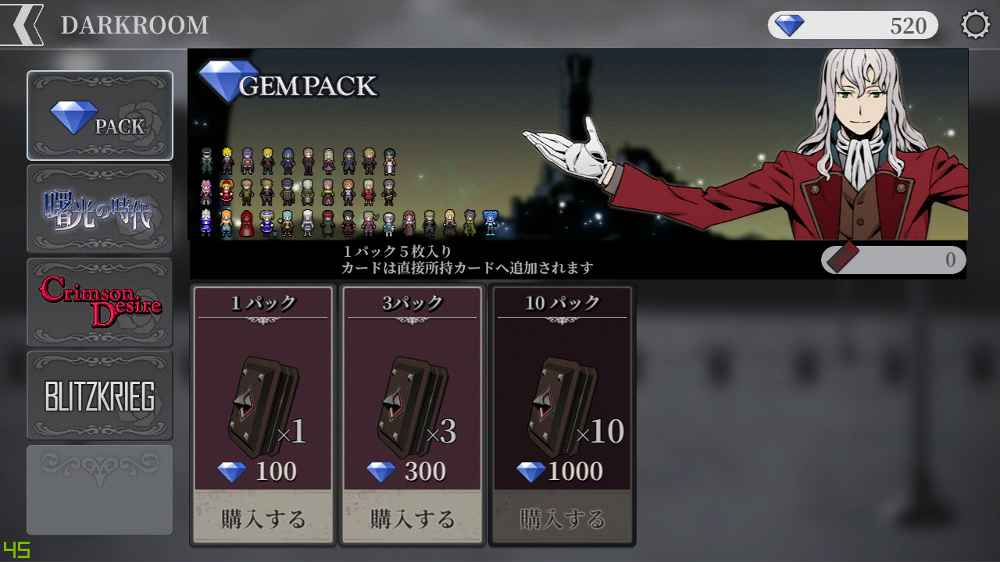
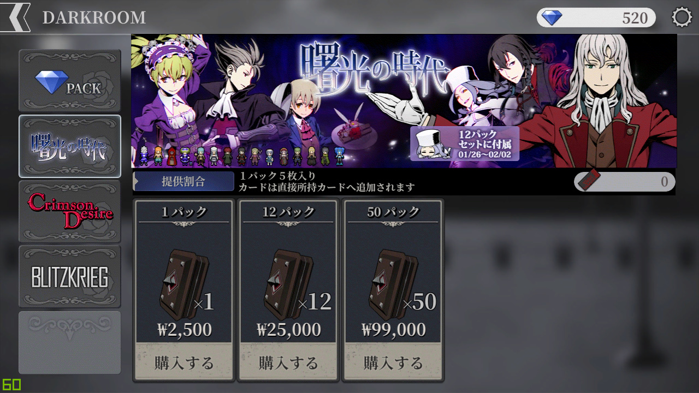
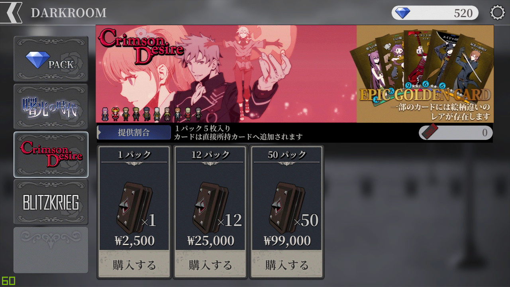
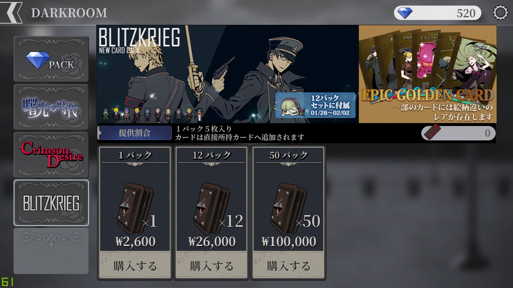
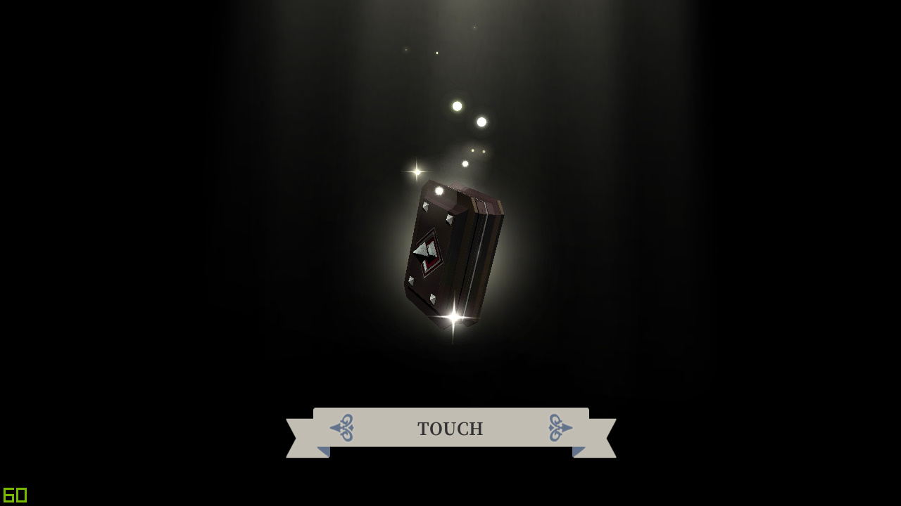
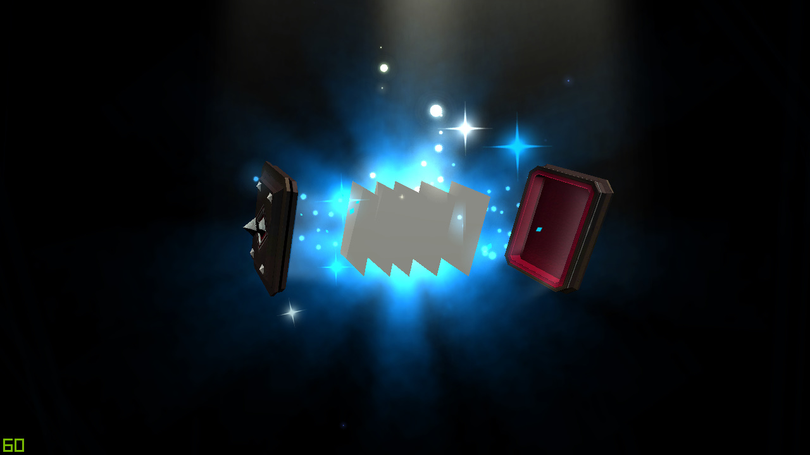
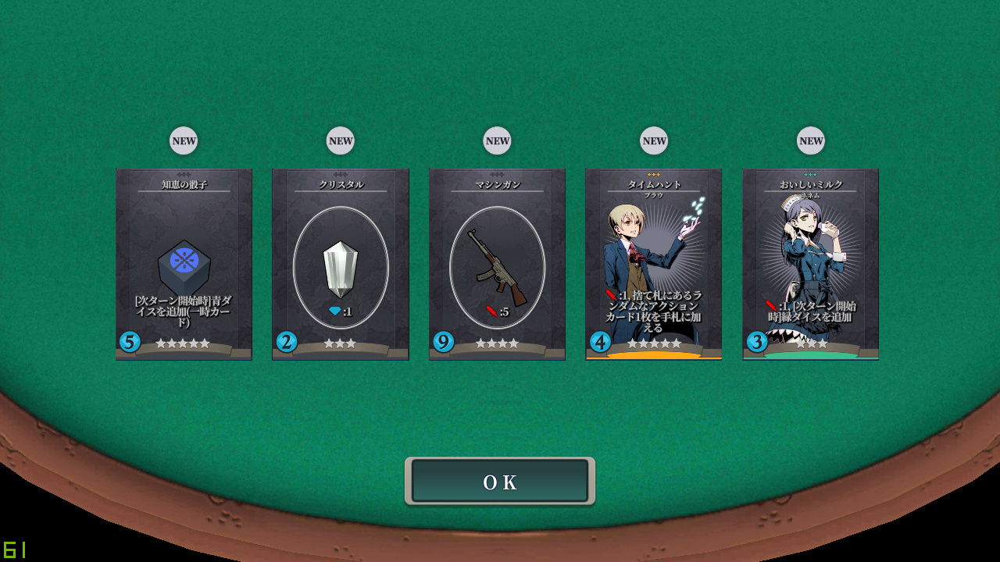
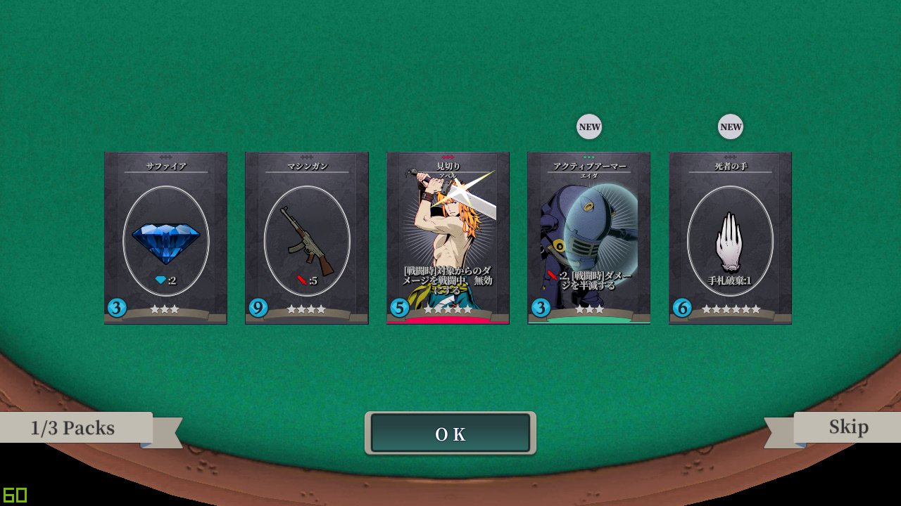
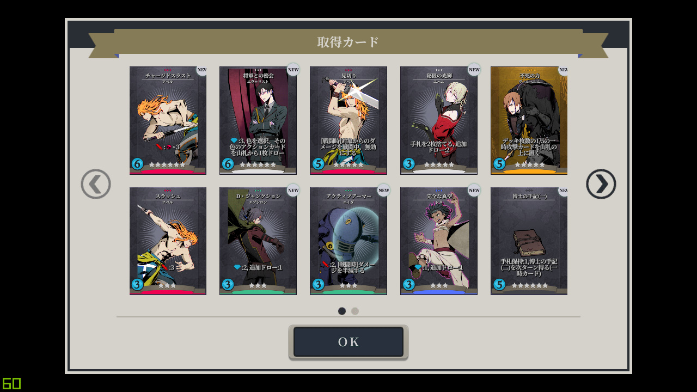

-

메인 화면의 다크룸에 대해 알아봅니다.

다크룸에 들어오면 다음과 같은 화면을 볼 수 있습니다.
왼쪽 상단 화살표를 누르면 다시 메인 화면으로 돌아갑니다.
팩의 특징
-
팩 1개에는 5개의 카드가 들어있으며, 중복될 수도 있습니다.
-
낮은 확률로 [골든 카드]를 획득할 수 있습니다.
-
상단의 SD 아이콘으로 어떤 캐릭터의 카드가 등장하는지 알 수 있습니다.
-
"제공비율(提供比率)"을 클릭하면 등장하는 카드들의 확률을 확인할 수 있습니다.
-
이벤트를 통해 "팩 12개 묶음" 또는 "팩 50개 묶음"을 구매하여, 머리 인형을 얻을 수 있습니다.
※ 상단에 이벤트 기간과 보상이 표기됩니다.
팩의 종류
-
GEM PACK
현재까지 추가된 [액션 카드]와 [아티팩트 카드]들이 모두 등장하는 팩입니다. 해당 팩을 제외하곤 모두 과금이 필요한 팩이기 때문에, 무과금으로 플레이할 경우 원하는 캐릭터의 카드들을 빠르게 모으기가 힘듭니다.
※ GEM PACK은 과금 컨텐츠가 아니라 제공비율을 알려주지 않습니다.

-
서광의 시대
- [액션 카드]
그룬왈드 / 아벨 / 쉐리 / 로쏘 / 맥스 / 디노 / 마르그리드 / 네넴 / 마르세우스 / 브라우 / 벨린다 / 아리스테리아 / 엡실론 / 유레카 / 제이미
- [아티팩트 카드]
크리스탈 / 사파이어 / 루비 / 다이아몬드 / 나이프 / 롱소드 / 핸드건 / 라이플 / 성수 / 호부 / 오래된 코인 / 약초 / 포션 / 이빨요정의 이빨 / 코덱스 / 재앙의 반지

-
Crimson Desire
- [액션 카드]
리즈 / 도니타 / 브라우닝 / 유하니 / 메렌 / 비르기트 / 루카 / 아인 / 마리넬라 / 빌헬름
- [아티팩트 카드]
박사의 수기 / 죽은 자의 손 / 구시대의 방패 / 분노의 주사위 / 혼돈의 주사위 / 예속의 주사위 / 지혜의 주사위 / 지배의 주사위
※ [에픽 골든 카드]를 얻을 수 있는 팩입니다.
※ [에픽 골든 카드] : 기능은 [골든 카드]와 동일하지만, 일러스트가 다릅니다.

-
BLITZKRIEG
- [액션 카드]
에바리스트 / 아이자크 / 에이다 / 레타 / 제드 / 이블린 / 이데리하 / 실러리 / 콥 / 살가드
- [아티팩트 카드]
비밀증서 / 새로운 코인 / 블랙 다이아 / 머신건
※ [에픽 골든 카드]를 얻을 수 있는 팩입니다.
-
팩 1개 구매시

구매성공시, 다음과 같은 화면이 뜹니다.

화면을 클릭하면 팩이 열리며, 이 때 등장하는 이펙트는 등장한 카드들의 희귀성을 나타냅니다.
-
파란색 : "모든 카드가 중복일 경우" 또는 "레어도가 가장 높은 카드의 레어도가 6 이하일 경우"
-
빨간색 : "레어도가 가장 높은 카드의 레어도가 7일 경우"
-
무지개 : "레어도가 가장 높은 카드의 레어도가 8 이상일 경우"
-
황금색 : "[골든 카드]가 존재할 경우"

획득한 카드들을 한 눈에 볼 수 있으며, "OK"를 누르면 다크룸 화면으로 되돌아갑니다.
-
팩 다량 구매시

첫번째 팩은 단품 구매시와 동일한 애니메이션을 보여주지만, "Skip"을 누르면 나머지 팩에 대한 애니메이션을 건너뛸 수 있습니다. "OK"를 누를 경우, 다음 팩에 대한 애니메이션을 시작합니다.
-

"Skip"을 눌렀을 때 등장하는 화면입니다. 획득한 카드들을 정리해서 확인할 수 있습니다.
-
이상으로 하위메뉴 []편을 마칩니다.
하위메뉴 []편으로 내용이 이어집니다.